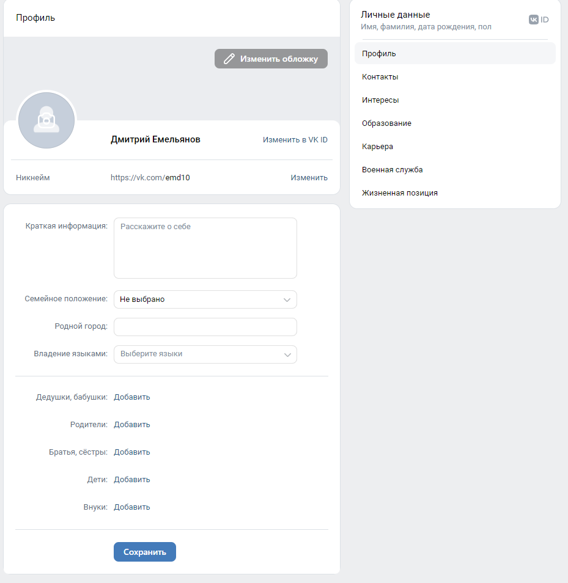
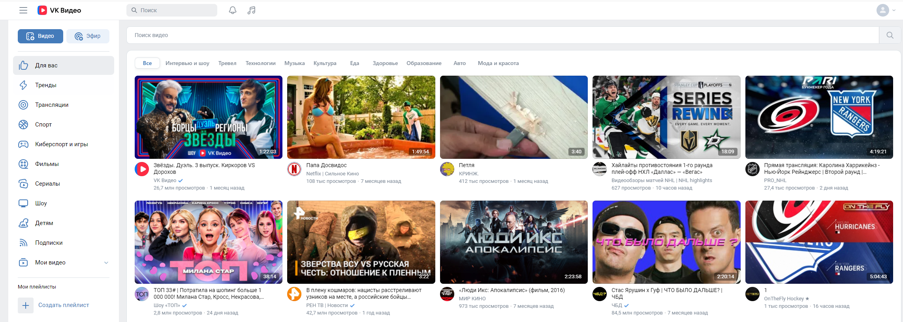

Регистрация
1. Заходим на любой сайт, я возьму в пример
vk.com.
Внимательно проверяйте, на какой сайт вы зашли! Мошенники создают сайты с похожим интерфейсом и совсем немного отличающейся ссылкой, чтобы украсть ваши данные!
2. Перед вами откроется страница авторизации. Нажмите на зеленую кнопку "Зарегистрироваться"
3. Введите ваш номер телефона
4. Далее на ваш телефон либо позвонят, либо пришлют SMS.
Если вам позвонят, нужно будет ввести последние 4 цифры номера телефона, с которого поступил звонок. Например, звонок поступил с номера, оканчивающегося на «75-22». Вводим в поле «7522».
Если звонка не поступит, подтвердить номер телефона можно будет через SMS.
Если вам сразу пришло SMS с кодом, или если не поступил звонок, то вам нужно будет ввести код из SMS. В данном случае, нужно будет ввести код «814942».
5. Далее вас попросят заполнить основную информацию о себе:
- Фамилия, имя. Лучше указывать реальные данные, чтобы вас могли найти ваши знакомые, а также чтобы не возникало трудностей при необходимости восстановить доступ к странице. Если не хотите указывать реальные данные, можно написать и ненастоящее имя
- Дата рождения. Если не хотите, чтобы кто-то знал ваш возраст, дату рождения можно будет скрыть
- Пол
- Фотография для аватарки (по желанию)
На этом регистрация завершена. Теперь вы можете пользоваться всеми функциями соцсети. При чем мы привели 5 основных пунктов, которые являются частью любой социальной сети.
Авторизация
Во ВКонтакте при регистрации пароль указывать не требуется, но в других социальных сетях пароль зачастую обязателен. Вход осуществляется через одноразовые коды, высылаемые по SMS. Раньше наличие пароля было обязательным. Тем не менее, при желании, установить пароль можно.
1. Вводим свой номер телефона
2. Если у вас установлен пароль, введите его. Если не установлен, нажмите «Подтвердить по номеру телефона»
3. Введите код из SMS, которая должна прийти на ваш телефон
Заполнение профиля
При регистрации требуется указать только основные данные (фамилия, имя, дата рождения, пол). Однако, можно заполнить и другие данные, чтобы вашим знакомым легче было вас найти, а другие люди могли знать о вас больше.
Чтобы заполнить данные о себе, заходим в раздел «Моя страница» и выбираем «Редактировать профиль»
Редактор профиля
Здесь вы можете написать о себе. Выбрать себе фото профиля(аватарку) и его обложку.

Приватность
Благодаря настройкам приватности вы можете скрыть свой контент на странице от постронних лиц. Например, можно выкладывать фотографии только для друзей или даже только для определенного круга друзей. Также можно закрыть доступ к контенту для определённых лиц.
Защита аккаунта
Вход осуществляется через одноразовые коды, высылаемые по SMS. Однако при желании пароль можно установить, чтобы дополнительно защитить аккаунт в случае утери телефона.
Пароль рекомендуется менять раз в полгода, так как он может оказаться в базах данных у злоумышленников.
Двухфакторная аутентификация - надеждный способ защитить свой аккаунт. Вам нужно будет вводить одновременно и пароль, и код из SMS (либо из специального приложения для генерации кодов)
Фотографии
Неотъемлемой частью любой соц сети являются фотографии, абсолютно каждый пользователь может публиковать любые фотографии и посты, если они не нарушают правила сообщества о них расскажем в конце
Видео
Также можно пойти и посмотреть видео других пользователей и сообществ, а также выложить свои

Друзья
Для того, чтобы находить друзей, у соц сетей есть множество фильтров. В зависимости от их геолокации, возраста, семейного положения и вообще любой информации в их профиле.
Мессенджер
Основная функция любой социальной сети это отправка и обмен сообщениями.
Сейчас можно отправлять:
- Текстовое сообщение
- Стикер - картинка, с помощью которой можно выражать эмоции. Большинство наборов стикеров платные, но есть и бесплатные. Зачастую бесплатные стикеры раздают ограниченное время за выполнение каких-либо несложных заданий
- Голосовое сообщение (если вы его не можете послушать - доступна текстовая расшифровка)
- Видеосообщение (кружок)
- Фотографии
- Видео
- Музыка. Можно отправить только песни, которые уже выложены в VK. Чтобы отправить свою песню (или другой аудиофайл) - перед этим ее нужно выкладывать
- Файлы. Можно отправить любой файл - вордовский документ, презентацию, экселевскую таблицу, базу данных, чертеж, 3D-модель, программный код и многие другие
- Геопозиция (ваше местоположение, или местоположение какого-либо объекта на карте)
Групповые чаты
Можно создавать общий групповой чат для работы или просто общения с большим или узким кругом людей
Звонки
С помощью соц сетей вы можете не только писать сообщения, но и звонить друг другу (или даже нескольким друзьям сразу), в том числе по видеосвязи.
Сообщества
Также важнейшей частью социальной сети, являются сообщества, о них мы расписали на отдельной странице.